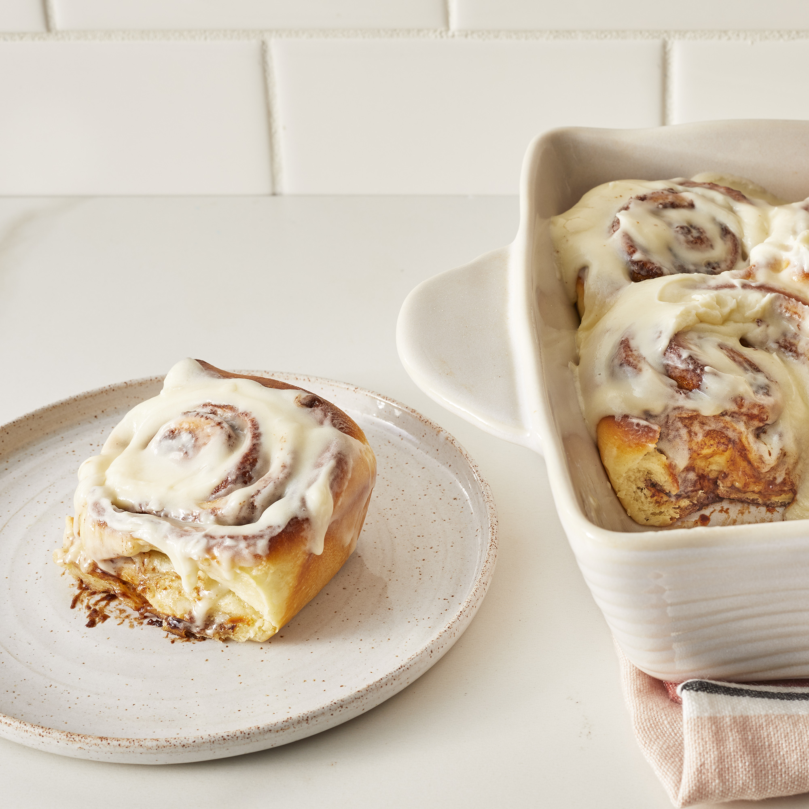

Cinnabon

This is an image depicting our final result.
This recipe is about making really good looking cinnabons!
It includes eggs, milk, and cinnamon so be aware of these allergies when cooking for guests.
Ingredients:
- 1 cup warm milk (110 degrees f/45 degrees c)
- 2 eggs room temp
- 1/3 cup melted margarine
- 4 1/2 cups bread flower
- 1 teaspoon salt
- 1/2 cup white sugar
- 2 1/2 teaspoons bread machine yeast
Filling:
- 1 cup packed brown sugar
- 2 1/2 tablespoons ground cinnamon
- 1/3 cup softened butter
Icing:
- 3 ounces softened cream cheese
- 1/4 cup softened butter
- 1 1/2 cup confectioners' sugar
- 1/2 teaspoon vinilla extract
- 1/8 teaspoon salt
Steps:
- place ingredients in the pan of the bread machine as per recommended settings via manufacturer.
- Put it on dough cycle and press start.
- After the dough has doubled in size turn it out onto a lightly floured surface, cover and let rest for 10 minutes.
- In a small bowl, combine brown sugar and cinnamon.
- Roll dough into a 16x21-inch rectangle.
- Spread dough with 1/3 cup butter and sprinkle evenly with sugar/cinnamon mixture.
- Roll up dough and cut into 12 rolls. Place rolls in a lightly greased 9x13 inch baking pan.
- Cover and let rise until nearly doubled, about 30 minutes.
- Meanwhile, preheat oven to 400 degrees F (200 degrees C).
- Bake rolls in preheated oven until golden brown, about 15 minutes.
- While rolls are baking, beat together cream cheese, 1/4 cup butter, confectioners' sugar, vanilla extract and salt.
- Spread frosting on warm rolls before serving.